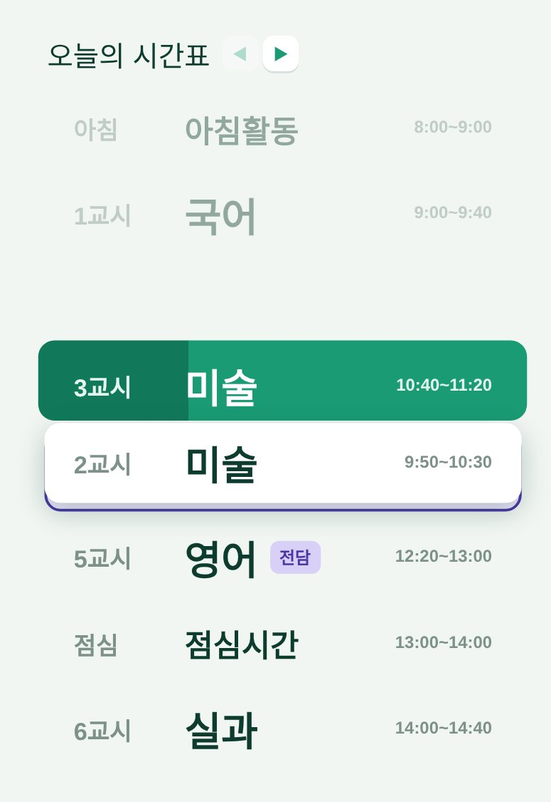
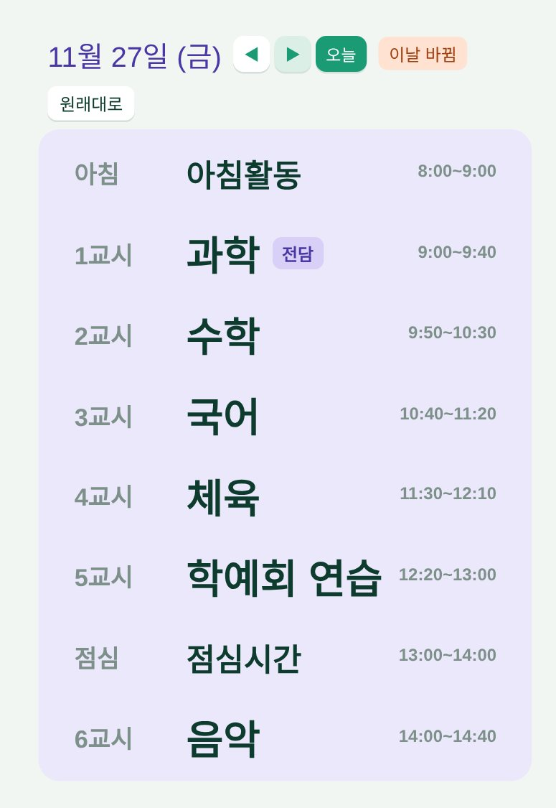

📅시간표
시간이 흐르는 게 보이는 시간표
지금 교시가 초록 줄로 표시되고, 수업 시간이 지날수록 진하게 차올라요.
- 끌어서 놓으면 두 과목이 자리를 바꿔요. 그날에만 적용돼요.
- 교시를 두 번 누르면 그날만 과목 이름을 바꿔요. (예: 학예회 연습)
- 제목 옆 ◀ ▶로 한 주 뒤까지 미리 보고 바꿔둘 수 있어요. 1분 지나면 오늘로 돌아와요.
기본 시간표는 그대로예요. 바뀐 날에는 「바뀜」 표시와 원래대로 버튼이 생겨요.